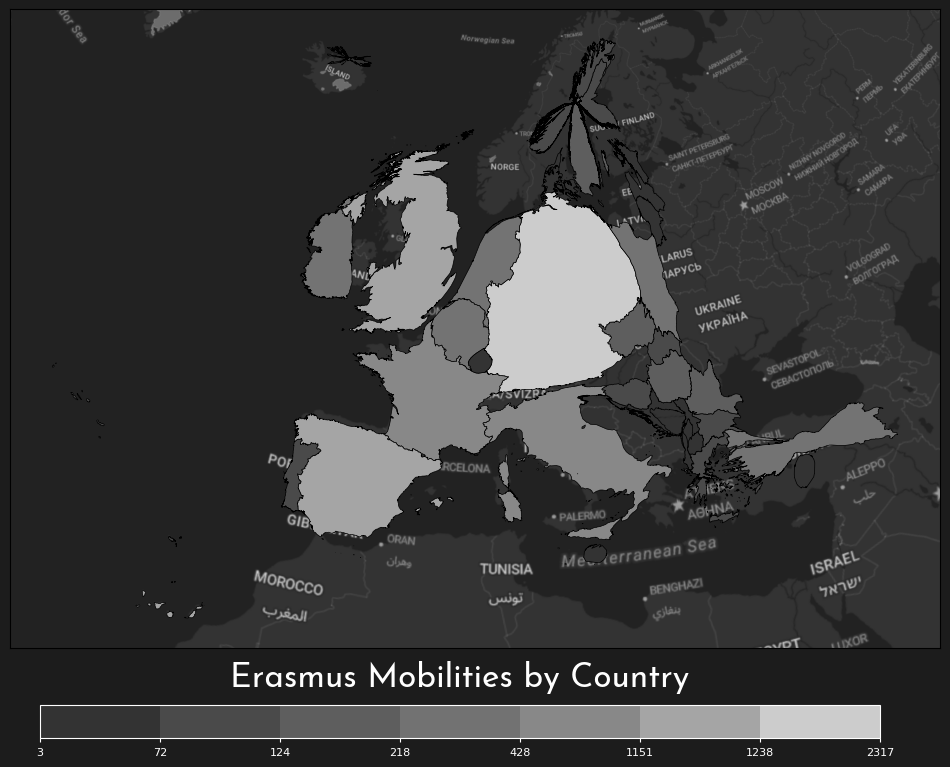

At the beginning of the course, I didn't have much previous experience with map making. Beyond the analytical skills I've developed since then, I feel like my confidence has grown quite a lot regarding the technical aspects of cartography. Simply put, creating beautiful maps seems way more possible now.
Each week I've learned various interesting aspects of cartography that I'd never considered before. This is the first map I made for this course:

I still really like this map. I think the layout works well for visual hierarchy, the colours pop nicely, the serif font gives a professional feel, and the story of inter-connectedness shines through.
There are, of course, things that could be changed. I have created a version with geodesic lines, but I think the improvement is marginal. Edge bundling may help with the clutter of lines, but the real untapped potential comes from interactivity. It would be great to be able to click on each Finnish airport for more information and further route highlighting. This version would probably require a dynamic zoom on Finland so the airports are farther apart. I think the storytelling aspect would also be improved by such interactivity as the map would better display each airport's role in connecting Finland to the rest of the world.
After trying and failing to implement this type of clicking interaction using python, I came to the conclusion that something like javascript would be better suited for this task. As I'm more interested in beautiful visualizations than in GIS, I think learning cartography in js will be a great next step for my personal journey. Also, there are many cool maps I've seen in this course that I've yet to implement myself. I really think this course has helped me identify relevant map elements and I've developed a better sense for making cartographic decisions, so I can't wait to make more maps on my own!
In this project, I will be working with Erasmus mobility data from here, restricted to Europe. The data is in the EPSG:3035 projection, which is perfect for Europe-scale maps.
As an international student, this dataset is particularly interesting to me. I believe these mobilities are a form of culture sharing among the participating countries. This project explores several aspects of this dataset, with a focus on country-level statistics.
Without further ado, let's dive into it!

Quite a big difference! We can clearly see how popular Germany is for Erasmus students and how the "big 5" countries dominate both charts.
Let's see also take a look at a chord diagram that shows the relations between countries. For clarity, only the top 9 countries by total mobilities are shown explicitly.

Every good story has a plot twist and so is the case for this portfolio's narrative, although this twist was spoiled at the beginning by the page contents. We've seen the data and what it has to offer, so the path to the final version seems straightforward. However, there is one more wrinkle in that path, a new idea that further complicates things.
What if we played with the geographical area itself? After all, what could be more twisty in the cartographic world than a cartogram?

A cartogram is also great from a storytelling perspective, since it emphasizes the interesting aspects of the data in a very engaging visual way (especially for viewers familiar with the map of Europe). As far as visual hierarchy goes, Germany really draws the eye now, followed by the other literally big countries, and finally the small countries, title, and legend.
As an aside, since this map looks great in a monochromatic view, it means it is highly accessible for all kinds of colorblindness!

I strongly believe maps should speak for themselves. That's why I tried to keep these text blocks brief. For this map, however, I will describe it a bit more before showing it.
I decided to add interactivity to the previous cartogram, as it's somewhat unclear which country is which. This was an opportunity to add back the statistics from the other interactive country map. The projection and legend had to change because the use of folium, but I believe the overall map aesthetics have been preserved.
For this project, I have used every concept and technology I've learned in this course and it was very fun. The final map is one I'm very proud of and one I couldn't have imagined creating before taking this course (I didn't even know cartograms were a thing). The map offers a clear visual summary of the dataset's main findings, highlighting which countries participate most actively in Erasmus+ and how their mobilities are split between incoming and outgoing.
I hope this portfolio's story has been an engaging one. Here is the final map: